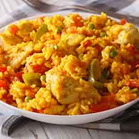

Gastronomia Latina
En nuestra sección dedicada a la gastronomía latinoamericana, te sumergirás en un universo culinario repleto de sabores vibrantes y tradiciones arraigadas. Pero nuestro enfoque especial recae en la riqueza de la comida colombiana. Colombia es un país de contrastes, y esto se refleja maravillosamente en su cocina. Desde las costas caribeñas hasta las montañas de los Andes, cada región ofrece una variedad de platos únicos que se han transmitido de generación en generación. En nuestra página, te llevaremos a un viaje a través de los sabores de Colombia. Descubre la frescura y la explosión de sabores en el ceviche de camarones de la costa atlántica, o adéntrate en las montañas para probar la deliciosa bandeja paisa, una abundante combinación de carne, arroz, frijoles y plátano frito. ¿Tienes un diente dulce? Entonces, no te pierdas la oportunidad de probar el arequipe, el dulce de leche colombiano, o los buñuelos, bolitas de masa fritas que son irresistibles. Prepárate para explorar la diversidad de la cocina colombiana a través de nuestras recetas auténticas y los relatos de sus orígenes. ¡Esperamos que te sumerjas en este viaje culinario lleno de sabor y tradición!
Recetas
Receta #1
Receta #2

Receta #3
La comida latinoamericana es una verdadera sinfonía de sabores, una explosión de colores y una experiencia culinaria que encanta a todos los sentidos. Desde México hasta Argentina, y en todos los países intermedios, la cocina latinoamericana es un tesoro gastronómico que deleita a las papilas gustativas de todo el mundo. Imagina saborear un auténtico taco mexicano, con su carne tierna y su salsa picante, o disfrutar de un suculento asado argentino con chimichurri casero. ¿Te apetece algo más exótico? Prueba el ceviche fresco de Perú o el sabor ahumado de la comida criolla cubana. La comida latinoamericana es una celebración de ingredientes frescos y sabores audaces. Desde los tamales y las empanadas hasta los plátanos maduros y el arroz con frijoles, cada bocado es una invitación a un viaje culinario lleno de sorpresas y deleite.
Ingredientes: 1 cucharada de aceite de oliva 1 cebolla mediana, picada 2 dientes de ajo, picados 1/2 pimiento rojo, picado 1/2 pimiento verde, picado 1/2 taza de arroz blanco 2 tazas de caldo de pollo 1/2 cucharadita de comino molido 1/2 cucharadita de orégano seco 1/4 cucharadita de sal 1/4 cucharadita de pimienta negra molida 1 pechuga de pollo cocida y desmenuzada
Ingredientes: 1 taza de harina de maíz precocida 1/2 taza de agua tibia 1 cucharadita de sal 1/2 cucharadita de azúcar 1/2 cucharadita de aceite vegetal 1/4 taza de queso blanco rallado (opcional)
Ingredientes: 1 libra de carne de res, pollo o cerdo, cortada en trozos 1/2 taza de cebolla picada 2 dientes de ajo picados 1/2 cucharadita de comino molido 1/2 cucharadita de orégano seco 1/4 cucharadita de sal 1/4 cucharadita de pimienta negra molida 1/2 taza de cilantro picado 1 libra de yuca, pelada y cortada en trozos 1 libra de plátano verde, pelado y cortado en trozos 1 libra de papa, pelada y cortada en trozos 1/2 taza de mazorca de maíz, desgranada 1/2 taza de agua